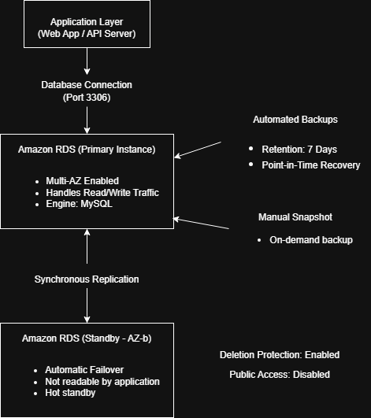

Reference Architecture

AWS architectures focused on high availability, automation, and secure production-style deployments.
Currently rebuilding these AWS architectures using Terraform Infrastructure-as-Code.
Available for cloud infrastructure projects and freelance DevOps work.
Infrastructure deployed across availability zones with failover protection
Auto Scaling Groups replace unhealthy instances automatically
Private subnets, security group chaining and IAM-based access
CI pipelines building container artifacts via GitHub Actions
End-to-end AWS infrastructure deployment built and tested manually in the AWS console. The architecture includes a custom VPC, public and private subnets across two availability zones, Application Load Balancer traffic distribution, Auto Scaling instance replacement, and a private RDS MySQL Multi-AZ database. Operational resilience was validated by terminating EC2 instances and confirming automatic recovery via Auto Scaling while maintaining application availability.

Custom VPC (10.0.0.0/16) with public and private subnets across two availability zones. Traffic is distributed through an Application Load Balancer to EC2 instances running in an Auto Scaling Group, while a private RDS MySQL Multi-AZ backend ensures database durability.
View Case Study → GitHub →
Highly available MySQL 8.4 deployment using Amazon RDS Multi-AZ with synchronous standby replication, automated backups with point-in-time recovery, gp3 storage with provisioned IOPS, and encryption via AWS KMS.
View Case Study → GitHub →
Static website architecture using a private S3 bucket secured with Origin Access Control and delivered globally through CloudFront. HTTPS enforcement ensures encrypted access while direct S3 access remains blocked.
View Case Study → GitHub →Automated CI workflow triggered on push events. The pipeline builds a Docker container from a custom Dockerfile, authenticates securely using repository secrets, and publishes versioned artifacts to Docker Hub.
I design and validate cloud infrastructure focused on reliability, security, and operational resilience. Architectures are deployed directly in AWS and tested under real operational scenarios such as instance termination, database failover, and restricted network access. I also implement CI/CD pipelines and containerized workflows to ensure repeatable and automated software delivery.
All architectures were deployed and tested in AWS to validate resilience, security, and failover behavior.
Verified that the Application Load Balancer routes traffic only to healthy EC2 instances registered in the target group.
Simulated instance failure by terminating EC2 instances and confirming automatic replacement by the Auto Scaling Group.
Validated RDS Multi-AZ standby replication and automated backup strategy for durability and recovery.
Confirmed that database instances remain inaccessible from the public internet through private subnet design and security group restrictions.
Tested S3 bucket access restrictions returning AccessDenied when accessed directly outside CloudFront.
Configured IAM instance profiles and AWS Systems Manager Session Manager to manage instances without exposing SSH.
Critical components such as compute and databases are deployed across multiple availability zones to tolerate infrastructure failures and maintain service availability without manual intervention.
Application servers are designed to remain stateless so Auto Scaling can terminate and replace instances without affecting persistent data. All state is stored in managed services such as RDS or S3.
Database instances remain isolated within private subnets and accept traffic only from the application security group. This prevents direct internet exposure and enforces a layered security model.
Services such as RDS, CloudFront and Auto Scaling reduce operational overhead while improving reliability through built-in automation and failover mechanisms.
Currently expanding Infrastructure-as-Code expertise by rebuilding existing AWS architectures using Terraform modules and reusable infrastructure components.
Reusable infrastructure components
Managing multi-environment state
Reading existing infrastructure
Executing scripts during deployment
Programmatic nested resources
Managing existing resources
The following infrastructure patterns are implemented in my projects and can be adapted for production workloads, SaaS platforms, and scalable cloud deployments.
Design and deployment of fault-tolerant AWS infrastructure using Application Load Balancers, Auto Scaling Groups, and Multi-AZ database backends.
Custom VPC architecture with public/private subnet segmentation, security group chaining, NAT gateways, and least-privilege network access models.
Production-ready RDS deployments with Multi-AZ replication, automated backups, point-in-time recovery, and encryption via AWS KMS.
Secure static site deployments using S3 with private access, CloudFront distribution, HTTPS enforcement, and optimized global delivery.
Automated build pipelines using GitHub Actions to build Docker images, publish artifacts, and support repeatable deployment workflows.
Architecture diagrams, deployment documentation, and operational validation procedures for reproducible cloud infrastructure.
If you're looking for cloud infrastructure design, DevOps automation, or scalable AWS architecture, feel free to reach out.
Email: sresthamridha@gmail.com
LinkedIn: linkedin.com/in/srestha-mridha
GitHub: github.com/SresthaMridha